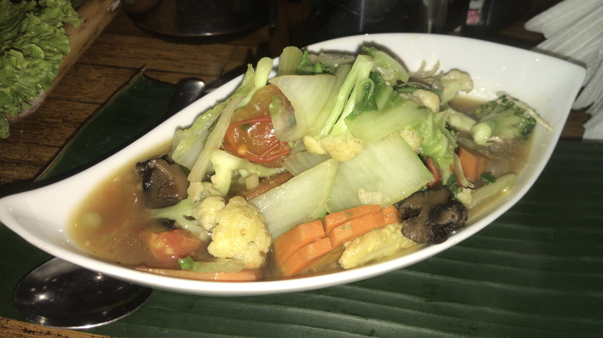

Cap Cai

Description
Cap Cai is an Indonesian-Chinese stir-fried vegetable dish featuring a colorful mix of vegetables and often a protein like chicken, shrimp, or meatballs, all coated in a light savory sauce. It's a healthy, quick, and versatile dish.
Ingredients
- 100 g chicken breast or shrimp, sliced
- 1 cup cabbage, chopped
- 1 carrot, sliced
- 1 cup broccoli florets
- 5 baby corns, halved
- 3 garlic cloves, minced
- 1 tbsp oyster sauce
- 1 tsp soy sauce
- 1/2 cup chicken stock or water
- 1 tsp cornstarch mixed with water
- 1 tbsp cooking oil
Steps
- Heat oil in a wok and sauté garlic until fragrant.
- Add the chicken or shrimp and stir-fry until nearly cooked.
- Add carrot and baby corn first, stir-frying for 1–2 minutes.
- Add cabbage and broccoli, stir-fry briefly.
- Pour in chicken stock, oyster sauce, and soy sauce; stir well.
- Add the cornstarch slurry and stir until the sauce thickens slightly.
- Cook until vegetables are tender-crisp, then serve hot.
Home